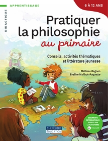
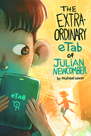
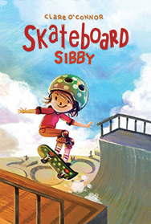
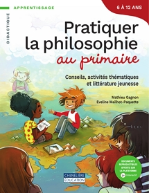
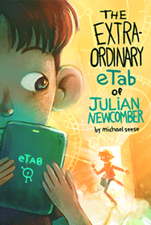
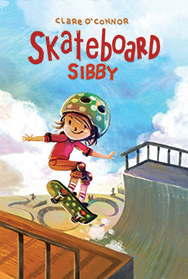

Complete list of works. Images below, is the 4 latest books I've had published.
 





Self-published material
- busy doing nothing, Hundredrabbits, 2021
- niju, Hundredrabbits, 2021, iOS/PC/Mac/Linux
- donsol, Hundredrabbits, 2020, iOS/PC/Mac/Linux
- catpot, Merveilles hyperjam 2020, Macintosh II
- thousand rooms, 2017
- oquonie, Hundredrabbits, 2014, iOS/PC/Mac/Linux
- Erri: vol.1 Éditions MachineMachine, 2010
- Merure: vol.3 Éditions MachineMachine, 2010
- Merure: vol.2 Éditions MachineMachine, 2009
- Merure: vol.1 Éditions MachineMachine, 2008
Children's books
Please take note that most of these books are published with my dead name.
- The extraordinary eTab of Julian Newcomber Michael Seese, Common deer press, 2019
- Skateboard Sibby Clare O'Connor, Secondstory press, 2018
- Les araignées monstres Édith Bourget, Éditions du Boréal, 2017
- Le Ooz - destination Monstroville Sophie Rondeau, Éditions Druide, 2017
- La Cabane Dans L'Arbre, Danielle Charland, Bayard Canada, 2016
- Opération noel Édith Bourget, Éditions du Boréal, 2015
- Un vrai cauchemar Édith Bourget, Éditions du Boréal, 2015
- Le laidorama - destination Monstroville Sophie Rondeau, Édition Druide, 2015
- La bibliopet - destination Monstroville Nadine Descheneaux, Édition Druide, 2015
- Une mission sans peur Katia Canciani, 2015
- La sorcière de notre rue Édith Bourget, Éditions du Boréal, 2014
- Le salon de décoiffure- Destination Monstroville Sophie Rondeau, 2014
- Le graffiti sanglant Édith Bourget, Éditions du Boréal, 2014
- Moche Café- Destination Monstroville Nadine Descheneaux, Sophie Rondeau, Édition Druide, 2013
- Le catalogue de robots Jean-Pierre Guillet, Bayard Canada, 2013
- Un grain d'or pour Nestor Micheline Mercille, EPPI, 2012
- Des rêves fous, fous, fous… Bernadette Renaud, ERPI, 2011
- La queue de l’espionne Danielle Simard, Bayard Canada, 2011
- Umphy the Umgum Mara D. Johnson, 2010

Games
- kanji study, 2022, Android
- Mon ami bulle, Télé-Québec, 2016, iOS/Android/TV
- Busy water Edoki Academy, 2016, iOS/Android
- Qui paire gagne Scorpion Masqué 2015
- Fruit ninja kinect 2 Hibernum Créations, 2015, Xbox One
- vendredi 13, Scorpion Masqué 2014, cardgame
- malisse, TOJAM 2014, Mac
- Tu dors au gaz Scorpion Masqué, 2014
- Rubber Tacos Sava Transmédia, 2012, iOS/Android/Web
- Puppeteer Toneplus animation studio, 2013, PS3
- Deep Realms Playdom, 2011, Facebook game
- Faerie solitaire Subsoap games, 2010, PC/iOS/Mac/Linux
TV commercials
- Justin Poppins sequence ByeBye 2016, TV
- Mini wheats strawberry Kelloggs, 2010, TV
- Mini wheats little bites Kelloggs, 2010, TV
- Mini wheats hot milk Kelloggs, 2010, TV
- Penguinos Fabrica Marinela 2009, TV
- Mini wheats blueberry muffin Kelloggs, 2009, TV
Magazines and other
- Pratiquer la Philosophie au Primaire M. Gagnon et E. Mailhot-Paquette, Chenelière Éducation, 2021
- Le Retour de Nicola Tardif Français 6e année, TC Média Livres, 2019
- La Croisière des Robots Français 3e année, TC Média Livres, 2019
- Kouamé en a assez! Français 3e année, TC Média Livres, 2019
- R-120 fabrique un chienFrançais 3-4e année, TC Média Livres, 2019
- Alice tic, tic, tic Français 3e année, TC Média Livres, 2018
- Rouge Babine Français 4e année, TC Média Livres, 2018
- Kayak Canada's History for Kids issue 47, 2014
- Kayak Canada's History for Kids issue 47, 2014
- Kayak Canada's History for Kids issue 50, 2014
- Kayak Canada's History for Kids issue 43, 2013
- Kayak Canada's History for Kids issue 44, 2013
- CFSL Artbook 06 CFSL ink, 2012
- Kayak Canada's History for Kids issue 42, 2012
- CFSL Artbook 05 CFSL Ink, 2011
- Magnitude 9 CFSL Ink, 2011
- CFSL Artbook 04 CFSL Ink, 2010
- CFSL Artbook 03 Édition Ankama, 2009
Gallery
- FILE GAMES RIO Oi Futuro Flamengo, brazil, 2015
- Boss rush Lightgrey art labs, Minneapolis, 2015
- IGF pavillion Moscone center, San Francisco, 2015
- MIGS Palais des congrès, Montreal, 2014
- Archaeology of the Digital: Media and Machines Canadian centre for architecture, Montreal, 2014
- Pictoplasma La GAÎTÉ LYRIQUE, Paris, 2011
- Tribute to Skydoll La Gallerie, Montreal, 2010